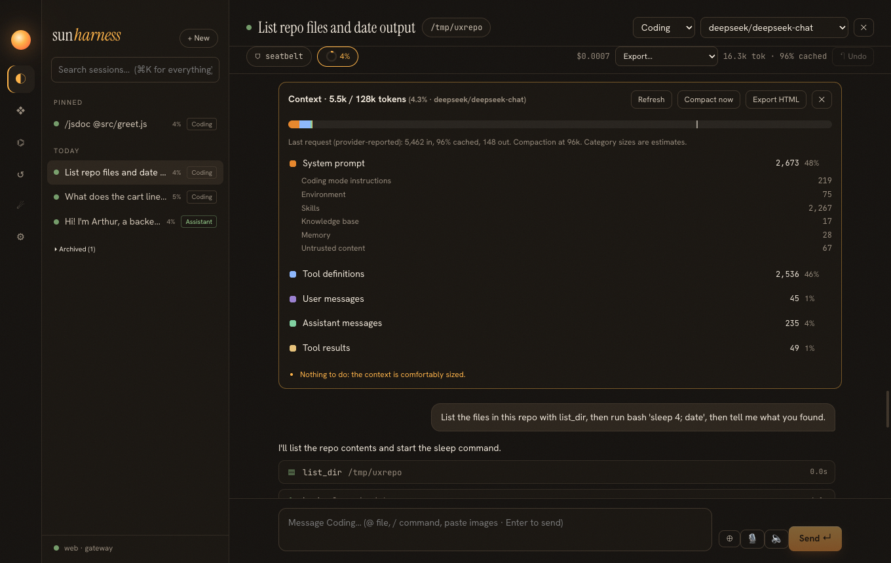

Release 0.6.0 · spec specs/026-context-usage-and-flow.md
24 · See what fills the context
The context window is the agent's working memory and most of its bill. Claude Code's /context and Cursor's context tray made it visible; sun-harness now shows it for every conversation, explains each part, and says what to do about it. Four smaller habits from the same tools came along: steering mid-run, model-written titles, keyboard shortcuts, pins and archive.
Measuring the model's view, not the transcript
Why not just show the provider's token count?
It is one number from the past: the last request. The report answers a different question: what will the next request contain, and which part is big? So it rebuilds the request the way the agent does (same compaction rule as deriveMessages, the same system prompt split into its sections, the tools the current mode offers) and measures each part with the same estimator compaction uses. The provider's real count sits next to it as a check: on a live deepseek-chat session the estimate said 5.5k tokens, the provider reported 5,462.
How did the system prompt get its sections?
buildSystemPrompt already assembled numbered chunks, each starting with a # heading. Exposing them as buildSystemPromptSections (and joining them for the prompt) keeps one source of truth: the report can never describe a prompt that differs from the one sent.

Suggestions that come from the numbers
| Signal | Suggestion |
|---|---|
| ≥ 80 % of the compaction threshold | run /compact or start a new session for an unrelated task |
| one tool result > 15 % and > 2k tokens | ask for narrower reads; compaction will drop it |
| tool definitions > 25 % with > 30 tools | disable unused MCP servers |
| project rules > 4k tokens | mark rarely needed rule files alwaysApply: false |
| skills index > 1.5k tokens and > 20 % | skills.compat: false or prune skills (added after the live report showed it) |
| attached files > 30 % | mention smaller files or folders |
Every session summary also carries the last request's real size and the model's window, so the sidebar and sun sessions can show a percent for every conversation without measuring each one.
Steering: talk to it while it works
The rule that made it safe: steering messages are taken only at the top of a step, after every pending tool call has its result, because providers reject a history where a user message splits a tool call from its result. The live run did exactly that: one running status, the message logged after the bash results, the answer in three bullets.
Titles, shortcuts, pins
- Titles: the first message gives an instant title (
source: first-message); after the first answer a background call writes a short one (source: model, live: "List repo files and date output"); a rename (source: user) is never overwritten. - Keys: Esc stops the run, ↑ in an empty composer brings back the last message (the command as typed, without the attached file contents), ⌘N opens a new session.
- Pins and archive: a
session/flagsevent, so organization survives restarts and syncs to every client like everything else.
A bug found on the way
Why did a report show no attached files for /jsdoc @src/greet.js?
The command template ended the sentence: "… in @src/greet.js." The mention parser took the final period as part of the path, the file "src/greet.js." did not exist, and nothing was attached. Trailing sentence punctuation is now stripped when the path with it does not exist. The context report made the missing attachment visible.
Verified
| Check | Result |
|---|---|
| report categories, compaction honored, attachments and images split out, provider usage, suggestions, text and HTML formats | pass |
| host report on a real session (system sections, tools, attachments), summary percent fields | pass |
| steering: immediate, after-run, never between a tool call and its result | pass |
| model title after the first run, not over a rename; pin/archive | pass |
| live: steering and model title on deepseek-chat; report screenshot through the web UI | pass |
Make the expensive thing visible, measure it the way the system actually builds it, and attach advice to each number.